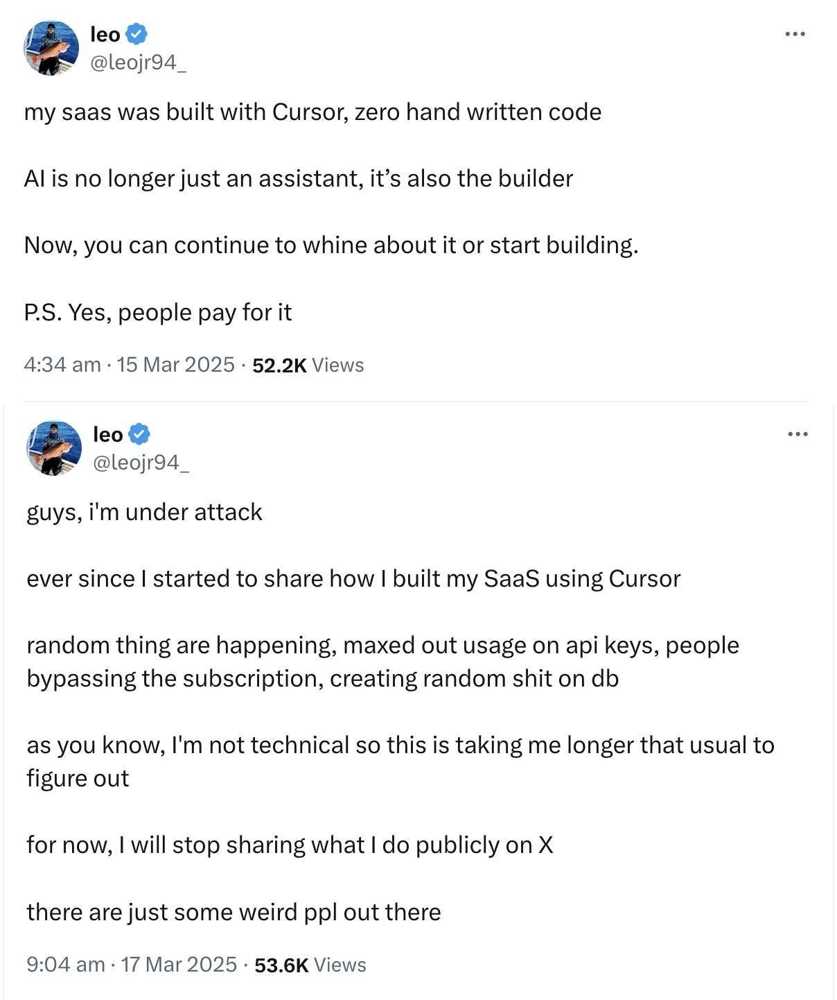

As you know, with the rise of LLMs, AI editors, and AI agents, we now have tools that allow us to write code declaratively, almost without needing to write code. Cursor, Windsurf, or my popular one, Trae IDE, are examples of AI-driven IDEs. Additionally, you can use GitHub Copilot add-ons with other popular IDEs. In recent days, I wanted to experiment with vibe coding. I first rebuilt the blog you are currently reading (volkanozdamar.com) from scratch using Hexo, Kotlin, Flexmark, and Freemarker. I also explored a few mobile projects. Although I attempted to write effective prompts, I eventually had to intervene using coding knowledge. Since it was necessary to manipulate line numbers, code blocks, class names, and variable names, the idea of 'zero coding knowledge requirement' faded away. During this process, I frequently had to fix unnecessary additions or disrupted code logic. While I managed to produce functional projects, the resulting output, which still contained bugs and unoptimized code blocks, raised questions about its suitability for real-world use. As a QA, I also asked myself how such a product should be tested.
Lack of Documentation and Planning
I believe these projects are currently best suited for hobby purposes, small teams of one or two people, or as a quick prototyping solution. However, the lack of documentation and planning presents challenges for project clarity and testing processes:
- Test planning becomes guesswork.
- Bugs are harder to track and reproduce.
- Future maintenance becomes time-consuming and error-prone.
Inconsistent Code Quality
While the functionality of the generated code is important, it also needs to be portable, refactorable, and secure. Code that lacks understandability, fails to follow best practices, or has not undergone a proper review leads to issues such as:
- Poor scalability and portability.
- Security vulnerabilities.
- Compatibility problems across different environments.
Unpredictable Outcomes
As I experienced, vibe coding often produces unpredictable outcomes, including code breaks, misunderstandings, or unnecessary code additions. This results in:
- Extended testing cycles.
- Misaligned expectations between teams.
Insufficient Testing Coverage
This coding paradigm lacks a focus on testing, as vibe coding typically prioritizes speed and development over quality assurance. Consequently, QA teams often identify gaps and bugs only after deployment, leading to costly post-release fixes. I believe this approach contradicts the principles of the shift-left mentality.

Difficulty in Scaling
Scaling issues arise when applications are released without understanding or optimizing the code. This neglect can lead to overlooked aspects such as: Performance under load.
- The number of users the application can support.
- The responses it might elicit under different scenarios.
While in the current days vibe coding may be suitable for hobbies or rapid prototyping, it introduces significant risks for larger projects -in my opinion- :) . The lack of documentation, inconsistent code quality, insufficient testing, and scalability challenges undermine the reliability and maintainability of the final product. Combining AI tools with structured development practices ensures creativity and quality assurance can coexist for better outcomes.